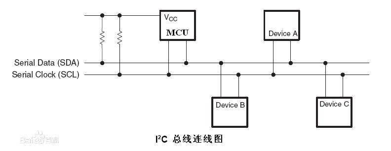
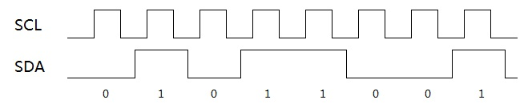
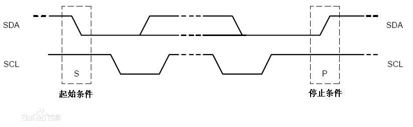
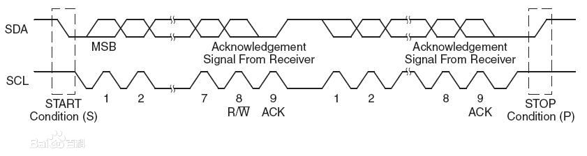
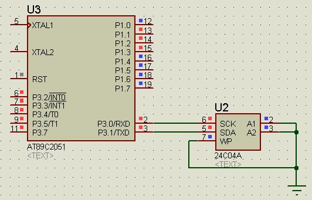

现在用到的外设越来越高级了，不得不研究了一下怎么使用I2C总线。下面先介绍I2C总线的基本原理，然后给出51单片机普通口模拟I2C时序进行读写的代码。
===================阶段一：I2C电气特性=================
I2C总线共由两条线路构成，一条为时钟线SCL（也可以写作SCK），一条为数据线SDA。可以同时有多个设备挂在I2C总线上，但其中只能有一个主设备（Master），从设备（Slave）可以有多个。通常MCU作为主设备，各种I2C外设作为从设备，如图：

主、从设备的主要区别在于时钟线SCL的控制权。在I2C总线系统中，只有主设备有权力控制时钟线。
在空闲状态下，由于上拉电阻的作用，SCL和SDA都保持高电平。此时，如果某个设备想发送数据，那么将通过拉低、释放（重新返回高电平）SCL和SDA来表达数据。
===================阶段二：I2C数据表达================
在I2C系统中，传输的数据必须以8位字节的形式传输，高位优先发送。假设数据从主设备发送到从设备，那么，主设备在发送每一位时，都是先将SCL拉低，然后将SDA置为要发送的位，然后将SCL拉高。而从设备在SCL从低电平跳变到高电平时读取SDA的值。假设要发送二进制的01011001，那么电平时序如图：

在每个SCL为高电平时采样SDA的值，就是01011001了。
如果数据从从设备发送到主设备，那么，从设备在每次SCL拉低时将SDA置为要发送的位，主设备在把SCL拉高后读取。
当然，除了传输8位字节以外，I2C还需要一些辅助信号，比如START、STOP和ACK。
START信号表明主设备要开始一次传输了，它的定义是——在SCL为高电平时，SDA发生负跳变。相对应的，STOP信号表明主设备要结束一次传输，它的定义是——在SCL为高电平时，SDA发生正跳变，如图：

由于所有设备都处在同一条总线上，所有信息都相当于广播，因此同时只能有一个设备向另外一个设备传输数据。为了能够指定数据的接收者，I2C总线上的每个从设备都有一个7位的地址，这个地址通常是外设出厂时就预设的。比如ADXL345（三轴加速度传感器）的地址就是0x53，而24C04A（EEPROM）的地址就是0x50。
如果主设备要向一个设备的某个寄存器中写入某个数据，那么总线上传输的数据如下：
（1）主设备发送START信号，表明传输开始；
（2）主设备发送从设备的设备地址与W标记，指定哪个从设备和写操作；
（3）从设备发送ACK响应；
（4）主设备发送寄存器地址，指定哪个寄存器；
（5）从设备发送ACK响应；
（6）主设备发送数据。
（7）从设备发送ACK响应；
（8）主设备发送STOP信号。
其中步骤2中，先发送7位设备地址，再发送一位0。0表示写操作。
如果主设备要从一个设备的某个寄存器中读取某个数据，那么总线上传输的数据如下：
（1）主设备发送START信号，表明传输开始；
（2）主设备发送从设备的设备地址与W标记，指定哪个从设备和写操作；
（3）从设备发送ACK响应；
（4）主设备发送寄存器地址，指定哪个寄存器；
（5）从设备发送ACK响应；
（6）主设备发送START信号；
（7）主设备发送从设备的设备地址与R标记，指定哪个从设备和读操作；
（8）从设备发送数据，主设备接收数据；
（9）主设备发送ACK后再发送STOP信号。
其中步骤2中，先发送7位设备地址，再发送一位1。1表示读操作。
一次完整的i2c交互如图：

===================阶段三：代码实现=================
types.h
#ifndef TYPES_H #define TYPES_H typedef char bool; typedef char int8; typedef unsigned char uint8; typedef int int16; typedef unsigned int uint16; typedef long int32; typedef unsigned long uint32; #define true 1 #define false 0 #define null 0 #endif
i2c.h
/* 本文件定义了i2c总线操作的函数： 向指定设备地址的指定寄存器写入指定的值 void i2c_write(uint8 p_address,uint8 p_register,uint8 p_data) 从指定设备地址的指定寄存器中读取值，返回读取的值 uint8 i2c_read(uint8 p_address,uint8 p_register); 向指定设备地址的指定寄存器开始，连续写入指定长度的数据 void i2c_multi_write(uint8 p_address,uint8 p_register_start,uint8 p_count,uint8* p_buffer); 从指定设备地址的指定寄存器开始，连续读出指定长度的数据 void i2c_multi_read(uint8 p_address,uint8 p_register_start,uint8 p_count,uint8* p_buffer); 如果要修改SCL和SDA的引脚，请到i2c.c中修改I2C_SCL和I2C_SDA宏 如果要修改I2C的速率，请到i2c.c中修改I2C_DELAY宏 */ #ifndef I2C_H #define I2C_H #include "types.h" void i2c_write(uint8 p_address,uint8 p_register,uint8 p_data); uint8 i2c_read(uint8 p_address,uint8 p_register); void i2c_multi_write(uint8 p_address,uint8 p_register_start,uint8 p_count,uint8* p_buffer); void i2c_multi_read(uint8 p_address,uint8 p_register_start,uint8 p_count,uint8* p_buffer); #endif
i2c.c
#define I2C_SCL P1^0
#define I2C_SDA P1^1
#define I2C_DELAY 10
#include "i2c.h"
#include "reg51.h"
sbit SCL=I2C_SCL;
sbit SDA=I2C_SDA;
static void i2c_delay(uint8 p_loop)
{
while(p_loop--);
}
static void i2c_start()
{
SDA=1;
SCL=1;
i2c_delay(I2C_DELAY);
SDA=0;
i2c_delay(I2C_DELAY);
SCL=0;
}
static void i2c_stop()
{
SDA=0;
SCL=1;
i2c_delay(I2C_DELAY);
SDA=1;
i2c_delay(I2C_DELAY);
}
static void i2c_send_ack(bool p_ack)
{
SDA=p_ack;
SCL=1;
i2c_delay(I2C_DELAY);
SCL=0;
i2c_delay(I2C_DELAY);
}
static uint8 i2c_recv_ack()
{
uint8 t_ack;
SCL=1;
i2c_delay(I2C_DELAY);
t_ack=SDA;
SCL=0;
i2c_delay(I2C_DELAY);
return t_ack;
}
static uint8 i2c_send_byte(uint8 p_data)
{
uint8 t_i;
for(t_i=0;t_i<8;t_i++)
{
SDA=p_data&0x80;
p_data<<=1;
SCL=1;
i2c_delay(I2C_DELAY);
SCL=0;
i2c_delay(I2C_DELAY);
}
return i2c_recv_ack();
}
static uint8 i2c_recv_byte()
{
uint8 t_i;
uint8 t_data=0;
SDA=1;
for(t_i=0;t_i<8;t_i++)
{
t_data<<=1;
SCL=1;
i2c_delay(I2C_DELAY);
t_data|=SDA;
SCL=0;
i2c_delay(I2C_DELAY);
}
return t_data;
}
void i2c_write(uint8 p_address,uint8 p_register,uint8 p_data)
{
p_address<<=1;
i2c_start();
i2c_send_byte(p_address);
i2c_send_byte(p_register);
i2c_send_byte(p_data);
i2c_stop();
}
uint8 i2c_read(uint8 p_address,uint8 p_register)
{
uint8 t_data;
i2c_multi_read(p_address,p_register,1,&t_data);
return t_data;
}
void i2c_multi_write(uint8 p_address,uint8 p_register_start,uint8 p_count,uint8* p_buffer)
{
uint8 t_i;
for(t_i=0;t_i<p_count;t_i++)
i2c_write(p_address,p_register_start+t_i,p_buffer[t_i]);
}
void i2c_multi_read(uint8 p_address,uint8 p_register_start,uint8 p_count,uint8* p_buffer)
{
uint8 t_i;
p_address<<=1;
i2c_start();
i2c_send_byte(p_address);
i2c_send_byte(p_register_start);
i2c_start();
i2c_send_byte(p_address+1);
for(t_i=0;t_i<p_count;t_i++)
{
p_buffer[t_i]=i2c_recv_byte();
i2c_send_ack(t_i==p_count-1);
}
i2c_stop();
}
=========================阶段四：测试======================
首选把i2c.c中的
#define I2C_SCL P1^0 #define I2C_SDA P1^1
改为
#define I2C_SCL P3^0 #define I2C_SDA P3^1
然后编写main函数如下：
#include "reg51.h"
#include "i2c.h"
void delay_ms(uint16 p_ms)
{
uint8 t_timer;
while(p_ms--)
for(t_timer=0;t_timer<250;t_timer++);
}
void main()
{
uint8 t_index;
for(t_index=0;t_index<100;t_index++)
i2c_write(0x50,t_index,t_index);
while(1)
{
for(t_index=0;t_index<100;t_index++)
{
P1=i2c_read(0x50,t_index);
delay_ms(100);
}
}
while(1);
}
搭建电路图如下：

该示例中，使用P3^0作为SCL，用P3^1作为SDA，先往EEPROM中写入数据，地址为i的地方放入数值i，i=0…99。然后就循环读取每个地址中的数值，并通过P1口显示出来。
运行后，可以看见P1口的数字不断递增，然后回到0。。。